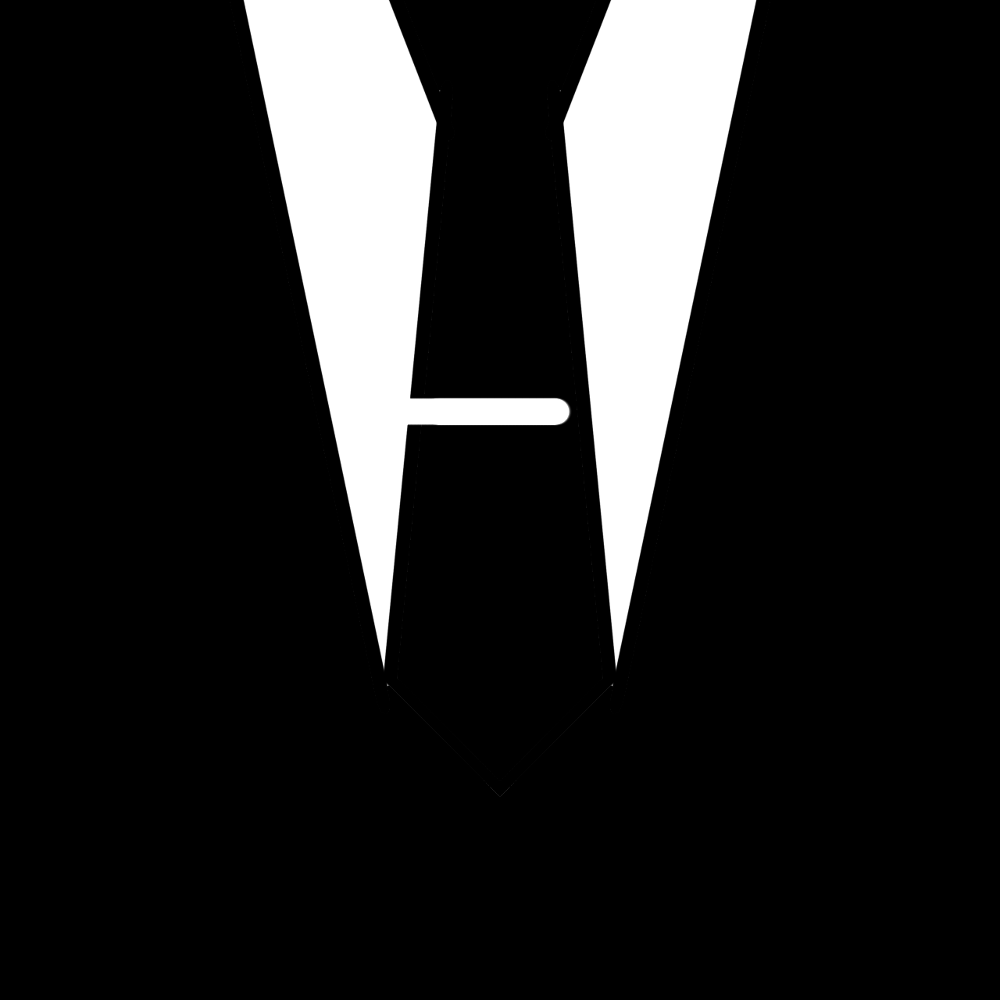
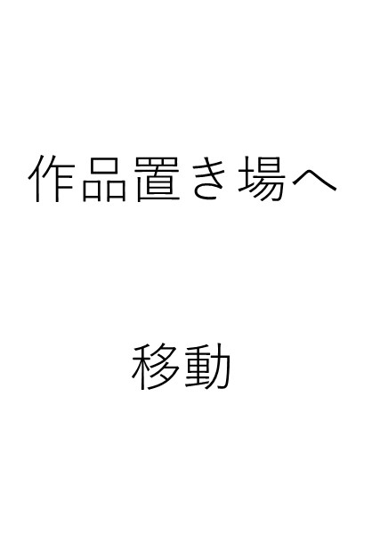
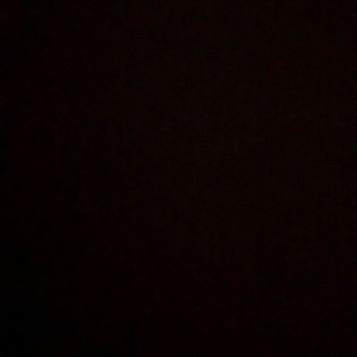
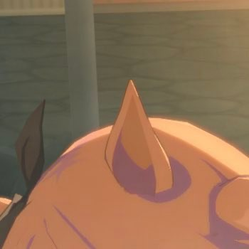
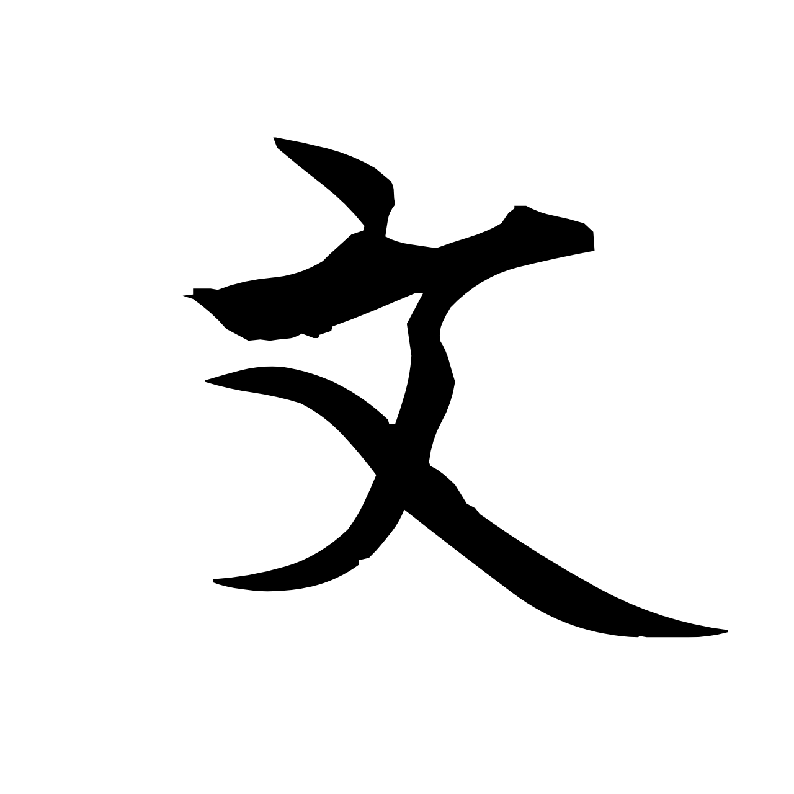
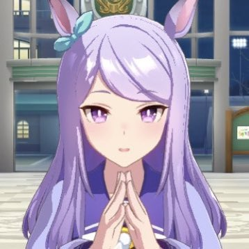
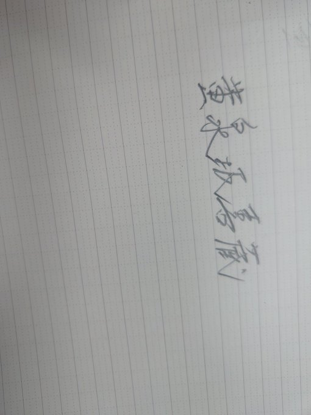
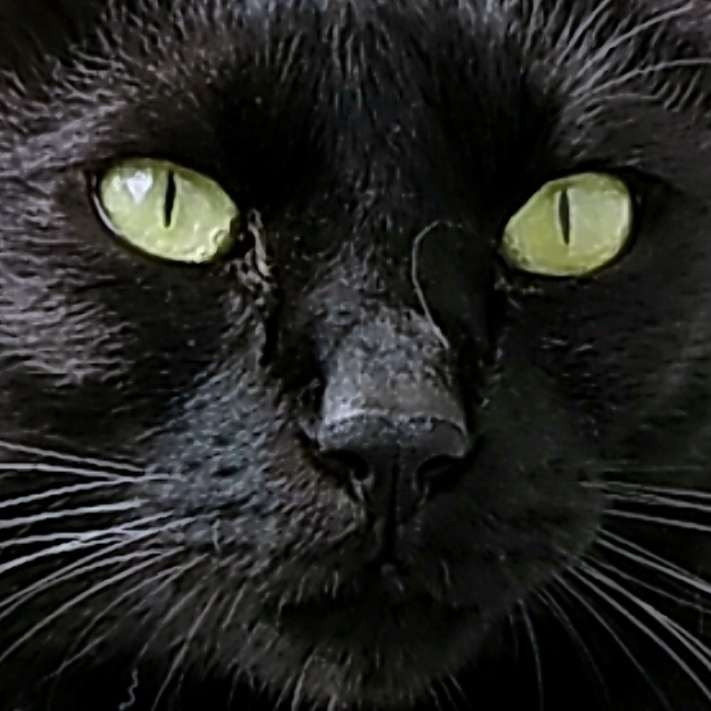
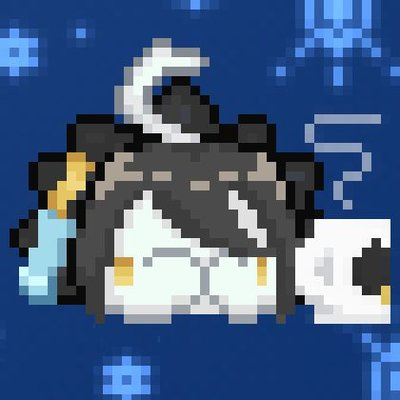
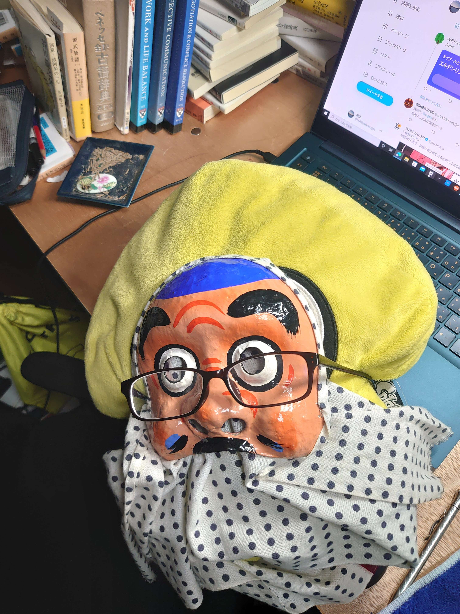

Regulus


SFを主体にする文塵ト淀サークルリーダー。
文字書きであり、その情景描写とSF周りの表現が光る文章が特徴。SF要素は専門的にも関わらず知識が無くても楽しめるものとなっているため誰にでも楽しめるが、残念ながら長編更新速度は遅い。
サークル内で最もカーストが低い疑惑がある、酒と煙草が趣味の人。
宵地

良く分からない文章を書き、良く分からない活動をしている人物。
基本的に暇人であり、彼のカレンダーに予定などない。
特筆すべきこともなく、これだけで語り尽くせてしまう。
常盤道玄坂円盤投げ

様々な分野、様々なジャンルで活動している人物。
活動範囲はおそらく文塵ト淀トップクラス。センスの感じられる文章を始めとして、絵や音楽関連にも手を出そうとする意欲の持ち主。将来が期待できる。
また恐らくはサークル内随一の常識人である。
Se nami
様々なジャンルの創作を好む雑食性を持ち合わせる人物。
メンバーの創作には広く目を通しており、後方で腕を組み頷く姿が散見される。彼の文字は未だ秘されており、サークルメンバーは常に焦らされている。
彼の誤字発見能力は誰もが認めるところであり、メンバーはいつも助けられてばかり。
TextMaker
BOT(有人)

他にはない独自の文章が輝く人物。
活動範囲は広く、その全容はサークルメンバーですら掴めていない。しかし主体はやはり文字のようであり、唯一性を感じられる文章は評価が高い。
丁寧な物腰とは裏腹に大きめの野心を隠し持っているとの噂。
紺野

文塵ト淀の数少ない絵描き。というか唯一の絵描きである。
絵描きを始めてから日は浅いらしいがその成長速度は著しい。特に色使いには目を見張るものがあり、メンバーはいつも彼に挿絵を書いてもらう機会を虎視眈々と狙っている。
昔に一度文字を書くといって反故にした過去があり、未だ根に持たれているとかいないとか。
黄泉坂

どこか柔らかさの感じられる文体で怪談を書く人物。
人外をこよなく愛しており、その愛は一般からしてみればやや倒錯的に映ってしまう。趣味が合えば彼の文章をよりのめり込んで読めるだろう。またガタイが非常に良く、文塵ト淀で物理的に彼に敵うものはいないとされている。
彼と「おすもう」した者はその後この世に存在していられないらしい。
yozora
心温まる恋愛を主に書く人物。
広い層に好まれるであろう文章を書ける文塵ト淀には珍しい人材。それのみに留まらず、苦悩や葛藤を軸にした物語も得意としている。しかし彼の真価はその速筆である。ほぼ一ヶ月間、毎日短篇の制作を成し遂げたことからもその速度が伺える。
文塵ト淀で最もユーモラスな人物としても認知されており、即興のギャグは稀に唸りをあげたくなる。
佐山祐樹

コンパクトに纏めた短編を書く人物。
文字数を膨らませずに物語を構成し、かつ文章は単調なものではなく趣を感じさせるものになっている。手に取りやすいという意味では一二を争うかも知れない。数学に対して非常に意欲的であり、その分野を開拓していく可能性がある。
彼もまたガタイが良い肉体派。
fell

どんな作品を書いても芯がぶれない文字を書く人物。
文塵ト淀では文字書き歴が最も長い大先輩。多くの縁を手繰り寄せてくれた恩人でもあり、メンバーは彼に頭が上がらない。胸がすくような文章はどの作品にも共通しており、背中を押しているようでもある。彼もまた速筆であり、一日で一短編を書くこともあったとか。恐ろしい。
余談になるが、私は彼にあの作品を読んでもらえて、ほんとうに、ほんとうに嬉しかった。
森本装置
特有のリズムと雰囲気を醸す文章を書く人物。
味のある文章はそれだけでなく、物語全編を通して衰えもしない。描く愛の形は若干歪んでいる気がしなくもないがそこはそれ。その文字表現には舌を巻く読者が多数いるという。常識人の皮を被りきれていない文字書きらしい人物である。
常にユーモラスとクレイジーを行き来しているようだ。
孵化

現代では希少になった文章を書く人物。
彼の書く文字は古き良き時代を彷彿とさせるものであり、またそれを目指している。深い洞察と連ねられる情景の描写は文字の可能性を再認識させてくれる。その文章は文塵ト淀でも特に独自性に溢れている。
知能の振れ幅もまた誰より大きい。
Lone
綺麗に整った恋愛を主に書く人物。
滞ることなく読め、すっと頭に入る文章を書いている。文塵ト淀の加入は最も遅かったはずなのだがいつの間にかすんなり馴染んでおり、メンバーとの交流も多い。メンバーは彼の今後の活躍に期待している。
ゲームの造詣は彼が最も深いかも知れない。